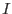
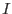

The likelihood statistic  is just one of many ways of estimating
is just one of many ways of estimating  for Poissonian data (see [2] for other examples). It is used here in the fitting procedure because it has the advantage that the Hessian components can be calculated analytically. It is however of no use in judging goodness of fit of the final solution, because of a large additive offset between the value of
for Poissonian data (see [2] for other examples). It is used here in the fitting procedure because it has the advantage that the Hessian components can be calculated analytically. It is however of no use in judging goodness of fit of the final solution, because of a large additive offset between the value of  and the value of
and the value of  appropriate to the probability of occurence of any particular
appropriate to the probability of occurence of any particular  value. A better estimator of
value. A better estimator of  is the Pearson formula ([2]):
is the Pearson formula ([2]):
This is used in the task to estimate  and hence a probability that the fitted model
and hence a probability that the fitted model  is a good predictor of the data .
is a good predictor of the data .